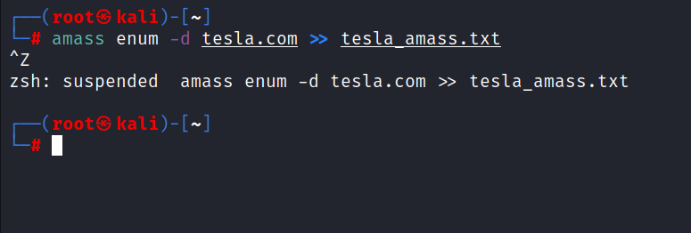
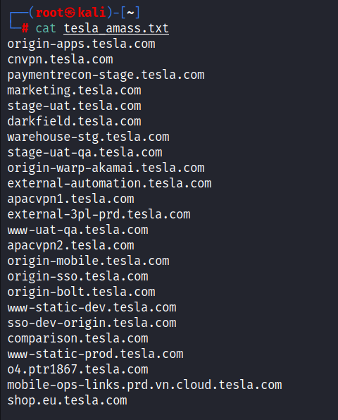
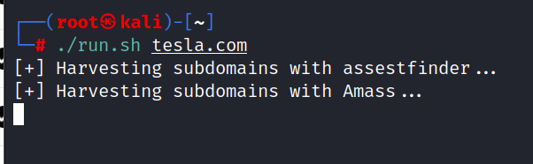

Amass is used for subdomain hunting
Github link :https://github.com/owasp-amass/amass
Will simply run this command as we already have installed the go
go install -v github.com/owasp-amass/amass/v4/...@master
Than will run the amass command to check if it's working
Command: amass enum -d tesla.com



It took almost 1+hour yesterday when u run the script and it was still fnding mroe domains it is advised to do another task while the scan is completed.